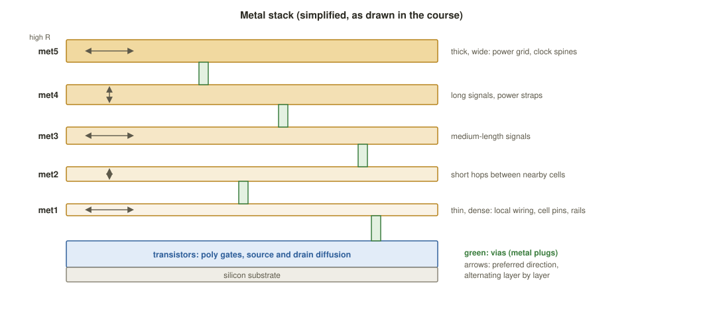
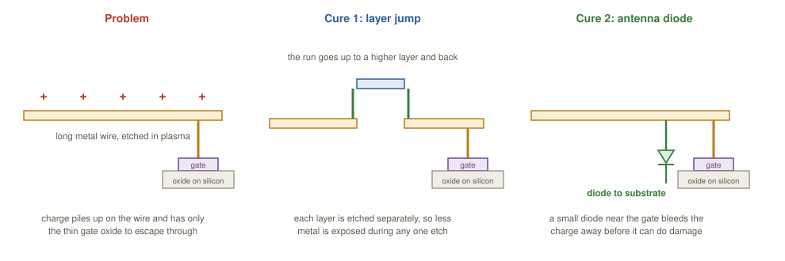
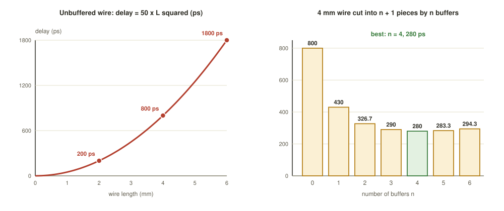

Chapter 6: Routing and Parasitic Extraction¶
Placement has fixed where every cell sits and clock-tree synthesis has tamed the skew. Until now a connection such as "the output of this NAND feeds three flip-flops" has been only a line in the netlist. Routing lays down the actual copper: for every net it finds wire segments on the routing layers, joined by vias, that tie all the net's pins together without touching any other net and without breaking a single geometric rule of the process. A modern block has millions of nets and needs billions of individual shapes.
When the wires exist, they can be measured. Parasitic extraction records the resistance and capacitance of all that metal and writes it to a file, so that timing, until now an estimate, becomes real. This chapter covers the two passes of routing, the metal stack, the order in which things are routed, the design rules and two physical hazards (the antenna effect and crosstalk), and then extraction and the rule that explains why long wires are so slow.
Learning outcomes
After this chapter you can:
- Tell a net from a wire, and global routing from detailed routing.
- Describe the metal stack, vias, tracks, pitch and preferred directions.
- Explain the order power, clock, signals, and the main design rules a router obeys.
- Explain the antenna effect and crosstalk, and how routing avoids them.
- Explain parasitic extraction and SPEF, and use the rule that wire delay grows with the square of length.
6.1 From nets to metal¶
A net is a logical fact from the netlist: "these pins are connected". A wire (or interconnect) is the physical metal that makes it true: segments on several layers, joined by vias. One net becomes many wire segments. Routing turns every net into wires that connect all its pins, touch no other net and break no manufacturing rule.
A track is a legal centre line for a wire on a given layer, like a lane on a motorway. The pitch is the centre-to-centre distance between neighbouring tracks, typically the minimum width plus the minimum spacing. The set of all horizontal and vertical tracks forms the routing grid. If wires are kept on tracks, the spacing rules are satisfied automatically.
Solving the whole routing problem exactly in one step is computationally hopeless, so routing is done in two passes (like planning a road trip: first choose the motorways and the towns, then every turn and lane change).
| Global routing | Detailed routing | |
|---|---|---|
| Granularity | coarse g-cells, each many tracks wide | individual tracks and wire shapes |
| Produces | a plan: which tiles and layers each net uses, plus a congestion map | real metal: wires, vias, layers |
| Design rules | ignored; only capacity counts | all enforced: width, spacing, via and area |
| Main question | can everything fit, and where is it tight? | draw legal, rule-clean wires |
| Speed | fast: minutes | slow: the runtime bottleneck |
| Output metric | overflow and congestion | DRC violations, wirelength, via count |
| OpenROAD tool | FastRoute (global_route) |
TritonRoute (detailed_route) |
Table 6.1 The two passes of routing.
Global routing overlays a coarse grid of g-cells on the block. It assigns each net to a sequence of g-cells and to layers, treating the boundaries between g-cells as edges with limited capacity (the number of wires that can cross). If a region is over capacity the tool reports a congestion hot spot now, cheaply, before any real metal is committed; congestion is often the signal to loop back and change the placement or the floorplan.
Common misconception
"Global routing draws thin wires, and detailed routing thickens them." No. Global routing draws no metal at all: it only assigns nets to regions and layers and predicts congestion. Every wire and via in the final layout is created by detailed routing.
6.2 The metal stack¶
Interconnect is built as a vertical stack of metal layers separated by insulating dielectric and joined by vias (Figure 6.1). The layers are not alike.
- Lower layers (
met1,met2) are thin and dense: narrow, tightly pitched and of high resistance per unit length. They suit short local hops between nearby cells. - Upper layers are thick and wide: low resistance and a coarse pitch. They suit long signals, clock spines and the power grid. A long net routed on a thick upper layer has far less resistance, and therefore far less delay, than the same net squeezed onto
met1. - Preferred directions alternate: one layer runs mostly horizontally, the next mostly vertically, and so on. A signal travels horizontally on one layer, rises through a via, continues vertically on the next, like a multi-storey road network.
- A via is a small metal plug joining a wire on layer \(N\) to a wire on layer \(N+1\). Vias have their own rules (enclosure, a minimum count for wide wires) and add resistance and area, so routers avoid needless layer changes.

The stack drawn is a simplified, Sky130-style five-metal stack. Process nodes with more layers extend the same pattern: the course's reference table lists, for a generic modern process, the top layers (M9 and M10) for the power grid, clock and long global routes, the intermediate layers for global signal routing and wide straps, mid layers for medium-length signals, M2 for short routing, M1 for cell-level connections and pins, then the poly and diffusion of the devices on the substrate.
6.3 Who is routed first¶
Not everything is routed at once, and not everything is routed the same way. Routing proceeds by priority.
- Power and ground are routed first, as special routing. The grid of wide straps and rings is usually built on the thick upper layers during floorplanning; it is in place before signals because signal routing has to weave round it. The standard-cell rails on
met1take their power from it. - The clock comes next. The clock nets from CTS are routed early and carefully, often on higher, lower-resistance layers and with extra spacing or shielding, so that their delay and skew stay under tight control.
- Signals come last. The millions of ordinary data nets are routed into whatever tracks remain, honouring each layer's preferred direction.
The least flexible and most valuable networks go first; the flexible many fill in around them. Letting a million data nets take the best tracks first would force power and clock onto poor resources.
6.4 Design rules the router obeys¶
Every shape the detailed router draws must satisfy the foundry's design rules, the geometric constraints that guarantee the layout can be made.
| Rule | Why it exists |
|---|---|
| Minimum width | a thinner wire may not print, or may break (an open) |
| Minimum spacing | closer wires may print as one (a short), and couple strongly |
| Via enclosure and via rules | metal must overlap a via enough to connect reliably; legal via sizes, spacing and counts |
| Minimum area | tiny slivers of metal do not pattern well, so a shape sometimes needs a jog to add metal |
| Density | each region of each layer needs neither too little nor too much metal (fill is added later) |
Table 6.2 Design rules that routing cares about most.
The router aims to be clean by construction, and the pitch is chosen so that on-track wires already meet the spacing rule. The authoritative check is the design-rule check (DRC) at signoff, treated in Chapter 8. Routing's job is to hand DRC as few violations as possible.
6.5 The antenna effect¶
The antenna effect is a manufacturing hazard, not a run-time one. Chips are built layer by layer, and each metal layer is etched with a plasma. While a given layer is being etched, a wire that is already connected to a transistor's thin gate oxide but not yet to any diffusion acts like an antenna: it collects charge from the plasma. If the connected metal area is large compared with the gate it feeds, the voltage can build up until it punches through the gate oxide, leaving a dead transistor discovered only after the wafer is finished.
Foundries therefore limit the antenna ratio: the area of metal connected to a gate must not exceed a given multiple of the gate area, on every layer at every fabrication step. Two cures are standard (Figure 6.2).
- Layer jumping. Hop up to a higher layer and back down, breaking a long run. Because each layer is etched separately, less metal is exposed during any one etch.
- Antenna diode. A small diode attached to the net near the gate gives the charge a safe path to the substrate.

The name has nothing to do with radio. A floating metal area harvests charge during fabrication and dumps it into a fragile gate.
6.6 Crosstalk¶
Two wires that run close and parallel form a small capacitor. When one, the aggressor, switches, it nudges the other, the victim. This is crosstalk, and its effects are two.
- Glitch (noise). A bump of voltage on a quiet victim wire, which might be captured as a wrong value.
- Delay change. If aggressor and victim switch together, the coupling can speed up or, worse, slow down the victim, pushing it out of its timing window.
Coupling capacitance grows with how long and how close two wires run in parallel, so routing controls it directly. The router's remedies are more spacing on sensitive nets, a grounded shield wire beside a critical net, shorter parallel runs and a different layer. Crosstalk cannot even be computed before routing, because the wires and their neighbours did not exist: that is why signal-integrity analysis waits for post-route parasitics.
6.7 Parasitic extraction: making timing real¶
A real wire is not an ideal connection. Metal has resistance \(R\) that grows with its length and shrinks with its cross-section, and capacitance \(C\) to the substrate and to neighbouring wires. Together they form a distributed RC network that delays and degrades every signal. These unwanted but unavoidable values are the wire's parasitics.
Parasitic extraction is the step that measures the \(R\) and \(C\) of every wire segment and via after routing and writes them out. Before routing, tools had only guesses: a wire-load model ("a net with three loads has roughly this much capacitance") or a rough estimate from the placement. That is why pre-route timing is only provisional. After extraction, timing uses the actual wires, and post-route analysis becomes the signoff-grade answer.
The results are written to a SPEF file (Standard Parasitic Exchange Format): a text file that lists, per net, the resistors and the capacitors (to ground and coupling to other nets) that model the routed interconnect. In OpenROAD, OpenRCX performs the extraction and writes the .spef, which the timing engine reads to annotate every net.
Why long wires are so slow¶
Model a wire of length \(L\) as a distributed RC line. Both its resistance and its capacitance grow in proportion to its length, \(R = rL\) and \(C = cL\), where \(r\) and \(c\) are values per unit length. A first-order (Elmore) estimate of the delay of a distributed RC line is proportional to \(RC\):
Double the length and the delay roughly quadruples. This one rule explains three things at once.
- Long nets are routed on thick, low-resistance upper layers.
- Buffers chop a long wire into short pieces: several small \(L^2\) terms instead of one large one.
- Placement that shortens critical nets pays off enormously.
Example 6.1: Rescuing a long wire with buffers
Use the course's model: an unbuffered wire of length \(L\) mm has a delay of \(50\,L^2\) ps; each buffer adds 30 ps; \(n\) buffers cut the wire into \(n + 1\) equal pieces, each of length \(L/(n+1)\). The delay is
Unbuffered wires. A 2 mm wire takes \(50 \times 4 = 200\) ps; a 4 mm wire \(50 \times 16 = 800\) ps; a 6 mm wire \(50 \times 36 = 1800\) ps. Twice the length, four times the delay.
A 4 mm wire with \(n = 0\) to \(6\) buffers. With \(50\,L^2 = 800\):
| Buffers \(n\) | \(800/(n+1)\) | \(+ 30\,n\) | Delay (ps) |
|---|---|---|---|
| 0 | 800 | 0 | 800 |
| 1 | 400 | 30 | 430 |
| 2 | 266.7 | 60 | 326.7 |
| 3 | 200 | 90 | 290 |
| 4 | 160 | 120 | 280 |
| 5 | 133.3 | 150 | 283.3 |
| 6 | 114.3 | 180 | 294.3 |
The best is \(n = 4\) at 280 ps (Figure 6.3). Beyond that, each extra buffer saves less wire delay, because the \(L^2\) terms are already small, while still costing its fixed 30 ps.

6.8 The real commands¶
In the OpenROAD and OpenLANE flow, global routing is done by FastRoute, detailed routing by TritonRoute (the drt router) and extraction by OpenRCX. A representative Tcl sequence follows.
# --- Global routing (FastRoute): plan regions, report congestion ---
set_routing_layers -signal met1-met5 -clock met3-met5
set_global_routing_layer_adjustment met1-met5 0.5
global_route -guide_file route.guide -congestion_iterations 30 -verbose
# --- Detailed routing (TritonRoute): real wires and vias, rule-clean ---
detailed_route -output_drc route_drc.rpt -output_maze maze.log \
-bottom_routing_layer met1 -top_routing_layer met5 -verbose 1
# --- Antenna check and repair ---
check_antennas
repair_antennas ;# inserts diodes or requests layer jumps
# --- Parasitic extraction (OpenRCX) -> SPEF ---
define_process_corner -ext_model_index 0 X
extract_parasitics -ext_model_file rcx_patterns.rules
write_spef routed.spef ;# the file timing and signoff will read
# --- Post-route timing now uses real parasitics ---
read_spef routed.spef
report_checks -path_delay max ;# signoff-grade STA (Chapter 7)
The resulting routed.spef is the file that Chapter 7 feeds to static timing analysis, and the routed layout is what Chapter 8 runs DRC and LVS on.
Summary¶
- Routing turns nets into wires. Global routing (FastRoute) plans g-cells and layers and predicts congestion; detailed routing (TritonRoute) draws real, rule-clean wires and vias on legal tracks.
- The metal stack has thin, dense lower layers for local hops and thick, coarse upper layers for long nets, clock and power, joined by vias, with alternating preferred directions.
- Routing order is power, then clock, then signals. The antenna effect is cured by layer jumps or diodes; crosstalk by spacing, shields and shorter parallel runs.
- Extraction measures every wire's \(R\) and \(C\) into a SPEF file. Wire delay grows as \(L^2\), which is why buffers and good placement matter.
Exercises¶
Exercise 6.1: Scaling a wire
A 2 mm wire has 200 ps of RC delay. Roughly how much does an unbuffered 6 mm wire have?
Answer
Three times the length gives about \(3^2 = 9\) times the delay: roughly 1800 ps.
Exercise 6.2: Why clock first?
Why is the clock routed before ordinary signals?
Answer
Its skew must stay tightly controlled, so it needs the best layers and the extra spacing before millions of signal nets take them.
Exercise 6.3: The buffer table
Using \(d(n) = 50\,L^2/(n+1) + 30\,n\), compute the delay of a 2 mm wire with 0, 1, 2 and 3 buffers. Which is best?
Answer
With \(50\,L^2 = 200\): \(n = 0\): 200 ps. \(n = 1\): \(100 + 30 = 130\) ps. \(n = 2\): \(66.7 + 60 = 126.7\) ps. \(n = 3\): \(50 + 90 = 140\) ps. Two buffers is best (126.7 ps).
Exercise 6.4: The optimum number of buffers
Treating \(n\) as a continuous variable, find the \(n\) that minimises \(d(n)\), and compare with Example 6.1 for \(L = 4\). For \(L = 6\), find the best whole number of buffers.
Answer
Set \(d'(n) = -50\,L^2/(n+1)^2 + 30 = 0\), so \(n + 1 = L\sqrt{50/30} \approx 1.29\,L\). For \(L = 4\) this gives \(n + 1 \approx 5.16\), so \(n \approx 4.2\), consistent with the best whole number \(n = 4\). For \(L = 6\), \(n + 1 \approx 7.75\); comparing whole numbers: \(d(6) = 1800/7 + 180 = 437.1\) ps, \(d(7) = 1800/8 + 210 = 435\) ps, \(d(8) = 1800/9 + 240 = 440\) ps. The best is \(n = 7\) at 435 ps, down from 1800 ps unbuffered.
Exercise 6.5: Global or detailed?
For each statement, say whether it describes global or detailed routing: (a) it reports a congestion map; (b) it snaps wires to tracks and drops vias; (c) it ignores spacing rules; (d) it is the slow part of the flow.
Answer
(a) Global. (b) Detailed. (c) Global: only capacity counts. (d) Detailed.
Exercise 6.6: Antenna or crosstalk?
A long met2 wire is connected only to one transistor gate and the foundry reports an antenna violation. Name the two cures. A different quiet wire shows a voltage bump whenever its neighbour switches. What is this and what are two cures?
Answer
Antenna cures: layer jumping (route part of the run up to a higher layer and back down) or inserting an antenna diode near the gate. The bump is crosstalk noise (a glitch) from an aggressor neighbour; cures include more spacing, a grounded shield wire alongside, a shorter parallel run or moving one of the nets to another layer.